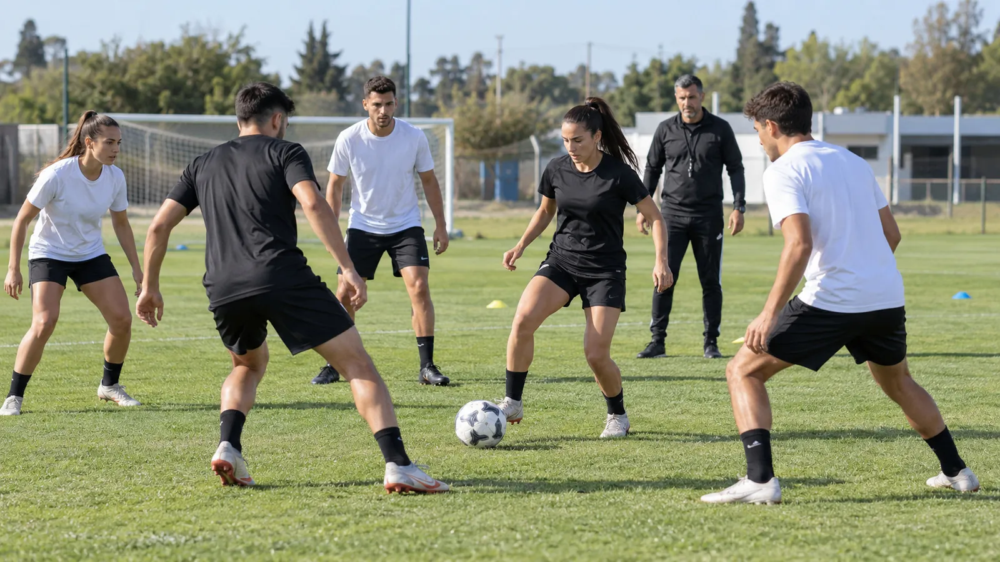
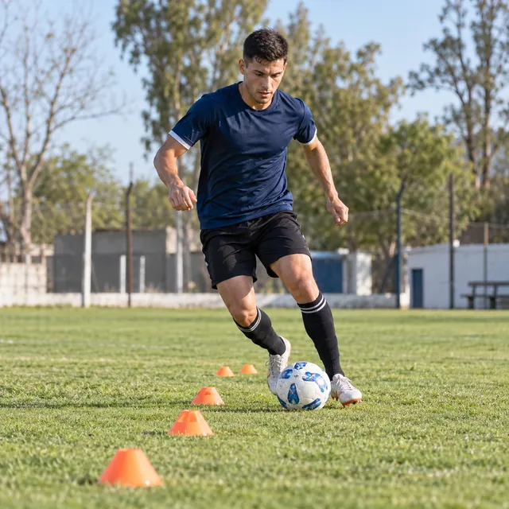
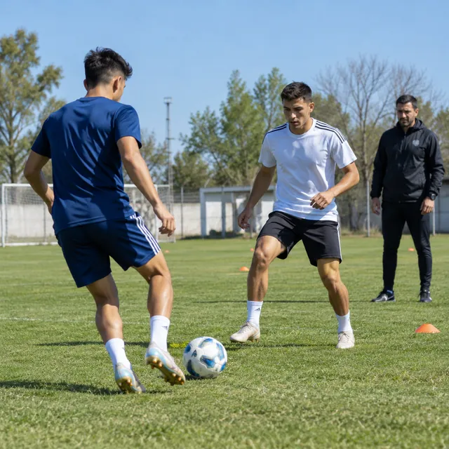
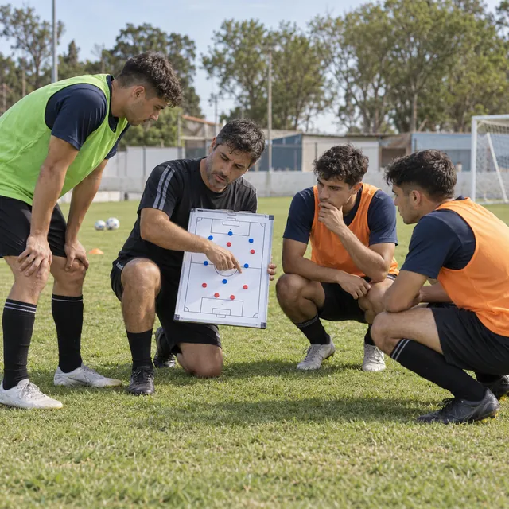
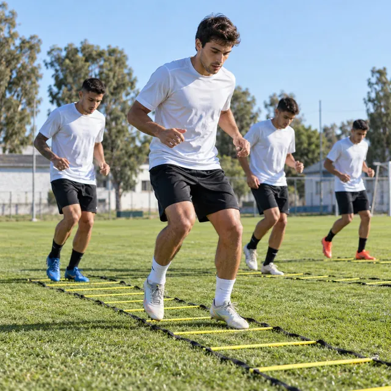
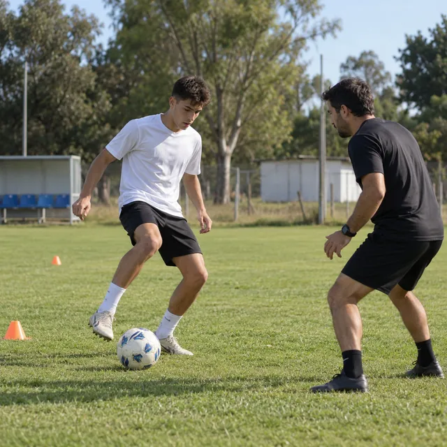
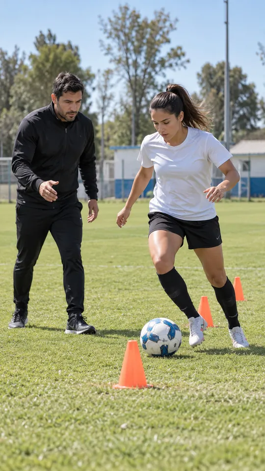

Formato
Grupal
Grupos por edad y nivel. Rondos, juego de posición y juegos reducidos para competir y decidir con compañeros.
Consultar turnos grupalesFútbol de alto rendimiento · Argentina
Sesiones grupales y personalizadas para niñas y niños desde los 7 años, juveniles y mayores de 18, en distintos turnos.

Cuatro áreas que se entrenan juntas, con la lógica del fútbol europeo: cada tarea tiene un objetivo técnico, táctico y físico.

Control orientado, pase, conducción y finalización con las dos piernas.

Posicionamiento y toma de decisiones en situaciones reales de partido.

Percepción y comprensión del juego: mirar antes de recibir y elegir la mejor opción.

Coordinación, velocidad y agilidad aplicadas al fútbol, con prevención de lesiones.
Tres etapas, dos formatos y el mismo método: cada jugador entrena lo que su edad y su nivel necesitan.
Niñas y niños desde los 7 años
Formación: coordinación, técnica con las dos piernas y juegos reducidos para aprender a decidir desde chicos.
De 13 a 17 años
Perfeccionamiento: técnica a velocidad de partido, conceptos tácticos por puesto y preparación física específica.
Mayores de 18 años
Rendimiento: puesta a punto para la competencia, trabajo por puesto y continuidad durante la temporada.
Grupos por edad y nivel. Rondos, juego de posición y juegos reducidos para competir y decidir con compañeros.
Consultar turnos grupales
Uno a uno con el entrenador: un plan a la medida de tu puesto, tu pierna menos hábil y lo que necesitás mejorar.
Consultar turnos personalizados
Elegí un foco y mirá cómo se reparte una sesión tipo de 90 minutos, tarea por tarea.
Sesión tipo90 minutos
Movilidad, coordinación y toques para despertar el pie.
Pase a uno o dos toques, perfil corporal y apoyos.
Control orientado, conducción y cambio de ritmo con las dos piernas.
El gesto técnico con oposición y poco espacio.
Estiramientos y devolución individual del entrenador.
La duración y la carga se ajustan a cada categoría y formato.
Quiero una sesión de tecnificaciónLos términos que vas a escuchar en cada sesión, los mismos que se usan en el fútbol europeo.
Completá la ficha y te respondemos por WhatsApp con los días y horarios disponibles.
Con la edad elegimos la categoría por vos.
Desde los 7 años. Los grupos se arman por edad y nivel: infantiles, juveniles y mayores de 18.
No. Sirve si jugás en un club o en un torneo, y también si querés mejorar para dar el salto.
Grupal, para competir y decidir con compañeros; personalizado, para trabajar a fondo lo tuyo: tu puesto, tu pierna menos hábil, tu definición. También se pueden combinar.
Ropa deportiva, botines o zapatillas según la superficie, canilleras y una botella de agua.
Escribinos por WhatsApp con la categoría y el formato, y te pasamos los días y horarios disponibles.
Contanos tu categoría y lo que querés mejorar. Te respondemos por WhatsApp con los turnos disponibles.